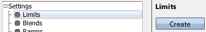
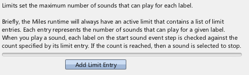
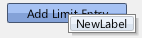
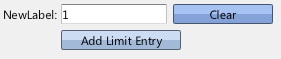
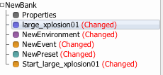
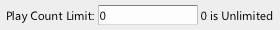
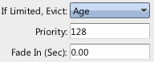

|
Limited Sound Counts |
| Related: | Text | Navigation |
This guide demonstrates how to categorically set the maximum number of playing sounds.
Requisite Terminology
New Terminology
Steps

This will contain a bunch of limit entries. Each limit entry will apply to a different label.

Limits are defined by groups of limit entries. A limit starts with no entries, and as a result, will have no effect on the number of playing sounds until entries are added.


By default, the new limit entry is set to 1. This means that there will only ever be 1 sound playing that has that label. If another tries to start, it will either fail to start, or another sound will be stopped to free space for the new sound.
That is all that is necessary in setting up a Limit to control the number concurrent sounds in your game. At this point, there can only ever be one playing instance of the sound created during this guide. Auditioning the sound twice in a row will kick out the first sound when the second one starts.
Controlling Sound Counts Per Sound Asset
There's another less common method for setting the maximum number of sounds that can be played. This is less useful because the limit is on the actual sound asset, instead of on a Label. However, it may come up. In order to limit the maximum number of times a Sound Asset can be used at one time, simply select the sound asset and alter the Play Sound Limit property.


If this count is hit, eviction will occur in the same way as if a Limit Entry's count had been hit.
Eviction
Eviction occurs when a count is reached, and there are more sounds that want to play than there is room for. There are several different ways to control what sound gets chosen. This is primarily determined by the "If limited, evict" property on the start sound event step.

By default, the oldest sound is kicked, meaning the new sound will always play.
These settings are documented here: Start Sound.
 Environments and Reverb Environments and Reverb |
 Sound Designer User Guide Sound Designer User Guide |
 Applying User Volumes Applying User Volumes |

|
Miles Sound System 9.3b
E-mail miles3@radgametools.com for technical support. Copyright © 1991-2012 by RAD Game Tools, Inc. All Rights Reserved. |

|